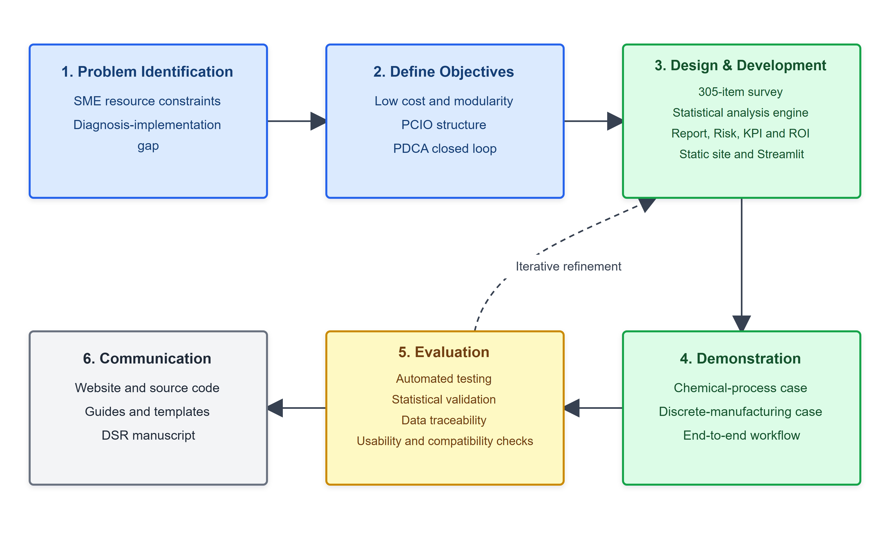

研究目的
PCIO Toolkit 面向资源受限组织的智能制造诊断与决策支持问题，尝试将能力递进逻辑转化为可执行、可追溯、可复测的人工制品。专家审核的重点不是评价组织绩效是否已经改变，而是评价设计需求、功能结构、输出逻辑和证据边界是否合理。
Design Science Research Expert Review
本网站用于支持 DSR 论文的结构化专家评审，集中展示人工制品设计逻辑、模块功能、证据包、脱敏 T0 基线案例与评分材料。
本门户展示的真实组织材料仅用于 T0 基线诊断、形成性现场评价与情境适配性检查。当前材料不包含 T1/T2 复测、客观 KPI 跟踪、对照组或长期运行记录，因此不得用于声称部署后改善、因果效果或真实 ROI 实现。
PCIO Toolkit 面向资源受限组织的智能制造诊断与决策支持问题，尝试将能力递进逻辑转化为可执行、可追溯、可复测的人工制品。专家审核的重点不是评价组织绩效是否已经改变，而是评价设计需求、功能结构、输出逻辑和证据边界是否合理。
本研究定位为 Design Science Research 人工制品设计与评价论文。核心产出包括 PCIO 四层能力模型、诊断到 PDCA 的工具链架构、以及面向中小企业和工业运营场景的可复用设计原则。

以上模块服务于诊断和决策支持，不表示已获得组织绩效改善证据。
门户不展示原始企业名称、员工信息、真实设备编号、车牌、客户、供应商、精确地址或罐区安防细节。所有案例均使用 Case P 与 Case T 形式，并只展示脱敏汇总信息和通用化风险/KPI条目。